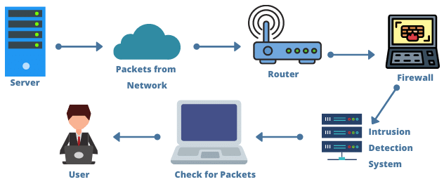
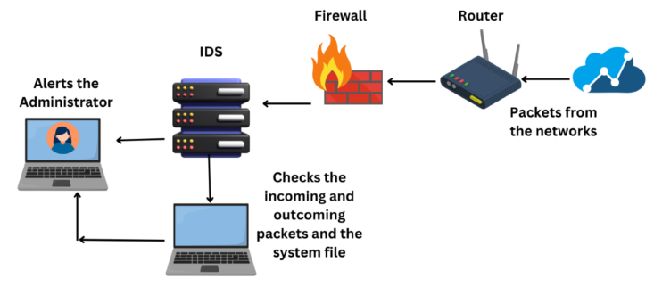
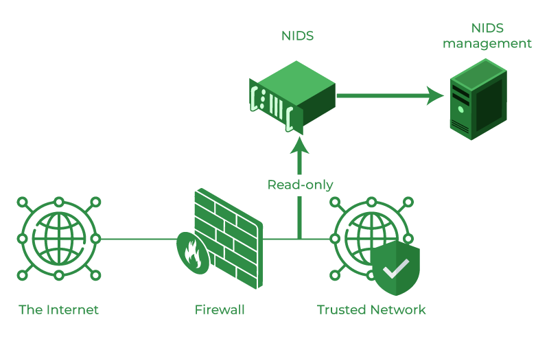
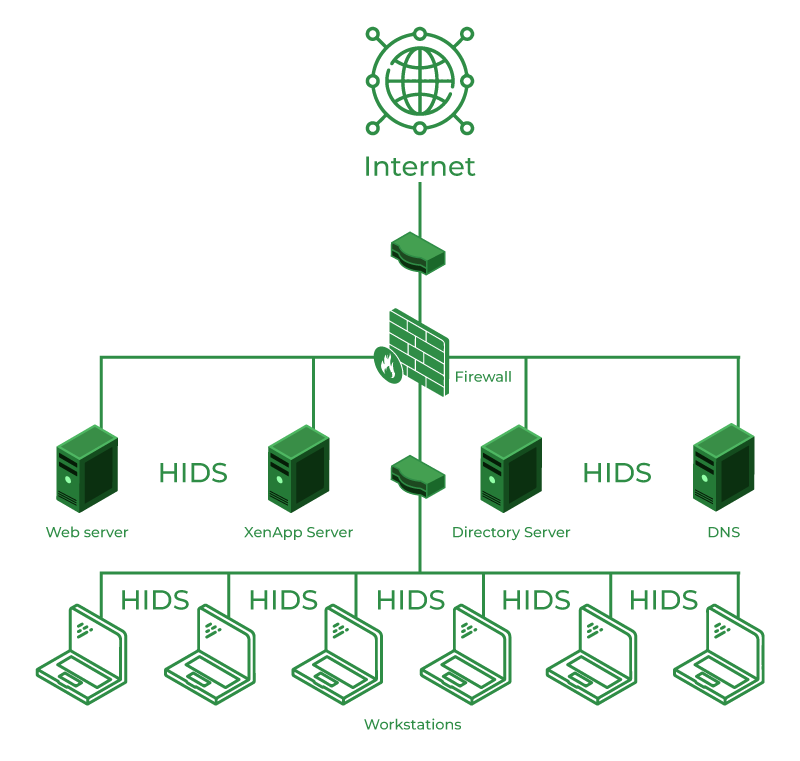
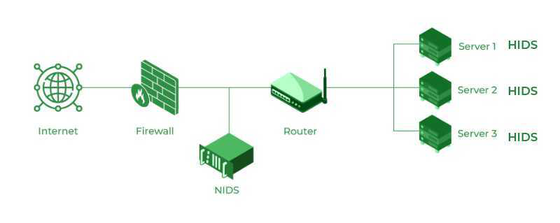

减少检测负载，提升效率
关注更有价值的威胁
符合纵深防御（Defense in Depth）原则
便于与内部网络结构对齐
防火墙负责访问控制
IDS 负责异常行为检测
基于网络的 IDS - NIDS
基于主机的 IDS - HIDS
基于特征的 IDS - Signature-based IDS
基于异常的 IDS - Anomaly-based IDS



Intrusion Detection Systems (IDS) play a key role in modern security architectures, as they provide a proactive line of defense. Unlike more classic preventive measures, such as firewalls and antivirus software, which aim to block known threats, IDSs can dynamically monitor and analyze network traffic, identifying patterns of anomalous or suspicious behavior that can reveal both known and new attacks.
A Host-Based Intrusion Detection System (HIDS) is a cybersecurity solution designed to monitor individual host systems—such as servers, workstations, or network devices—for signs of suspicious activity.
Unlike network-based systems that focus on traffic analysis, HIDS is tailored to scrutinize data generated within the host. This includes log files, process activity, application behavior, and other host-specific metrics that could indicate a potential security breach.
A Network Based Intrusion Detection System (NIDS), or Network Based IDS, is security hardware that is placed strategically to monitor critical network traffic. Traditional Network Based IDS analyzes passing network traffic and matches that traffic to a library of known attacks in its system. Newer systems use artificial intelligence (aka heuristics) to analyze traffic for patterns of interest. When an attack is identified, or a pattern of interest is found, an alert is sent typically to a Security Operations Center (aka: SOC) who review the alert and triage it for validity and subsequent escalation.